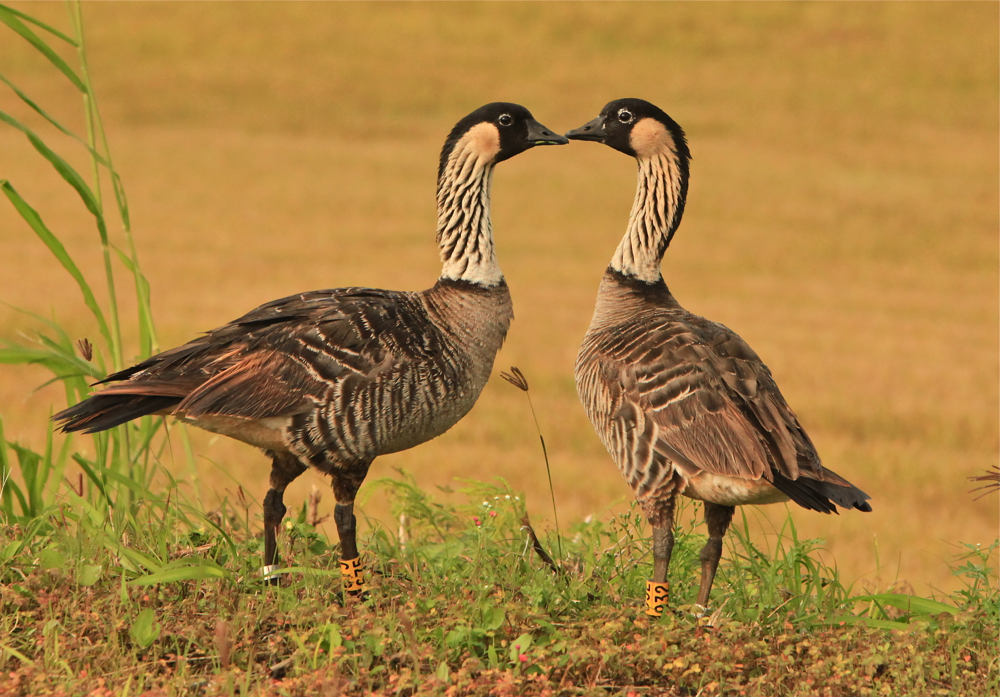

Much Ado About Nenes: A saga of Hawaii's state bird

Today, the nene is the world’s rarest goose. The Hawaiian goose was declared endangered in 1967, and they remain protected today.
A mated Hawaiian goose and gander will remain monogamous, staying together until one mate dies. On rare occasions, mated couples will separate if their breeding seasons haven’t produced offspring.
Hawaiian geese are truly odd birds: Unlike most geese, they aren’t migratory. They typically only move within the island boundaries of where they live. So nenes from the island of Hawaii do not fly to Maui or Kauai, and vice versa. This unusual quirk has yet to be explained by science.
As is true with all geese, the Hawaiian goose is monomorphic. This means that both the males and females look basically the same.
In 2012 on the island of Kauai, wild Hawaiian geese caused serious problems at the Lihue Airport because they liked to hang out at the golf course next door. The Department of Transportation was spending several hundred thousands of dollars each year to chase them out of flight paths. Officials eventually budgeted nearly five million dollars to move them elsewhere.
Though Hawaiian geese are capable of flight, for the most part they spend their time on the ground.
Nene News: A satirical newspaper that peers into the life and drama of Nenes, Hawaii's Sassiest (and Only) State Bird. Click the link below to download.